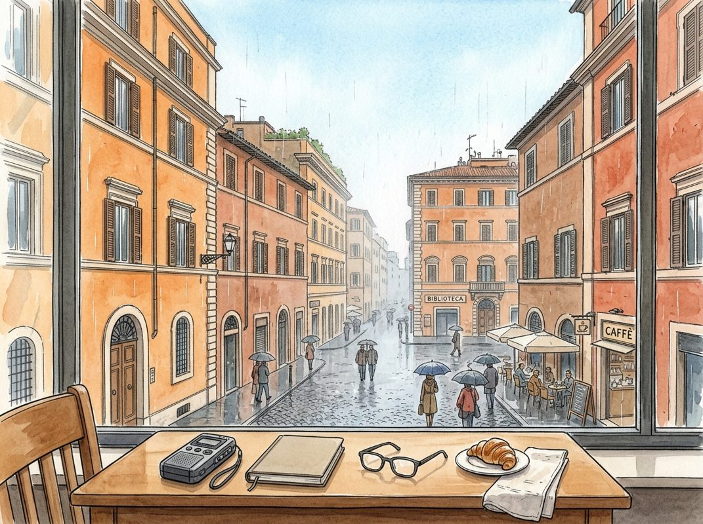

10/25

播客简报 2026-10-25
今日更新
Competition, Intensity & Building a $115 Billion Global Bank | Nik Storonsky, Revolut
来源：David-Senra
原链接：https://www.davidsenra.com/nik-storonsky
状态：已读完整音频 transcript
这期播客深入探讨了Revolut创始人Nik Storonsky如何凭借极致的竞争精神、独特的创始人视角和数据驱动的运营策略，在全球范围内构建一家颠覆性的数字银行。它适合所有寻求突破性增长、关注组织效率和全球化扩张的创业者、管理者以及金融科技爱好者。
- 极致的竞争驱动力：成为全球第一的野心：Nik Storonsky从小就展现出极强的竞争欲，无论是体育还是奥林匹克竞赛，他都渴望成为第一，并对第二名感到“非常愤怒”。这种基因般的竞争本能，驱动他将Revolut打造成一家在全球100个国家都位居第一的银行。他认为，全球银行市场高度碎片化，存在巨大机会，可以通过提供更优服务、更低价格、更佳客户体验来颠覆传统银行。他每天都以100%的状态投入，不关注竞争对手，而是思考如何超越昨天的自己，不断挑战极限。
- 创始人与职业经理人的本质区别：进攻与防守：Nik认为，Revolut的核心竞争优势在于其创始人主导的模式。传统银行的职业经理人往往只关注短期奖金和职位保护，决策保守，缺乏创新意愿，总是在“防守”。他们不具备技术背景，难以理解和推动技术创新。相比之下，创始人将自己与公司视为一体，目标高度一致，敢于做出大胆决策，不断探索新产品和新市场，始终保持“进攻”姿态。这种根本性的差异，导致传统银行难以与Revolut竞争。
- 监管策略的教训：信任是规模化的基石：Revolut早期为了快速发展，选择申请电子货币（e-money）牌照而非银行牌照，这被Nik视为最大的错误。当公司拥有数百万客户后，再申请银行牌照变得异常困难，因为监管机构对已有大量客户的公司风险评估更为谨慎。他强调，要建立一个真正大型的全球银行，获得银行牌照是“必须的”，因为客户需要信任银行来存放工资、财富和进行交易。美国一些大型金融科技公司（如Chime、Cash App）未申请银行牌照，限制了它们向主流高端客户群体扩张的能力，只能服务特定小众市场。
- 打造高速运转的“机器”组织：数据与效率至上：Nik将公司比作一台高速运转的“机器”，需要不断识别瓶颈并构建新的“肌肉”来解决问题。例如，为解决速度问题，他创建了大量小型独立团队；为应对监管挑战，建立了专门的政府事务部门；为加速招聘，优化了招聘流程。他强调，交易员背景带来的风险管理和量化思维至关重要。通过引入KPI和指标，实现组织内部的透明化，消除政治斗争，确保所有决策都基于客观数据，而非个人直觉或人际关系。
- “赌注”式产品开发与算法化决策：快速迭代与淘汰：Revolut的产品开发采取“赌注”（bets）模式：组建不超过10人的小型团队，在9-18个月内开发新产品。产品上线后，严格追踪其毛利润增长。如果一个“赌注”的表现属于历史底部25%，就会被果断“日落”（sunset）淘汰；如果表现优异，属于顶部25%，则会投入更多资源，扩大团队，使其成为公司的重要支柱。Nik坦言，他甚至不相信自己的直觉，完全依赖这种“算法化”的决策流程来筛选和放大成功的产品，避免资源浪费。
历史精选
Twitter (with Dick Costolo)
来源：Acquired
状态：已读音频详细听记
这期播客深入探讨了Twitter从诞生到上市的复杂历程，前CEO Dick Costolo以内部视角揭示了其独特的广告创新、错失的战略收购、艰难的用户增长以及在内容审核和社会责任上的挣扎。它不仅是科技公司成长史的案例，更是理解社交媒体平台如何平衡商业利益、用户体验与社会影响的深度剖析。适合所有对社交媒体发展、创业公司战略、产品创新和平台治理感兴趣的中文读者。
- Twitter的独特起源与早期挑战：Twitter被誉为“世界的脉搏”，尽管用户规模和收入不及Facebook，但其影响力深远。播客追溯了其充满争议的创立过程，以及创始人间的“音乐椅”现象。Dick Costolo作为前CEO，在加入Twitter前曾创立Spy on it和FeedBurner，后者专注于内容联合发布与广告插入，后被Google收购。这些早期经验为他理解内容分发和变现奠定了基础。播客还设想了如果Twitter在2010年左右收购了Instagram，今天的移动社交格局将截然不同，暗示了早期战略选择的关键性。
- 广告模式的革命性创新与早期营收：Dick Costolo于2009年加入Twitter担任COO，次年成为CEO。Twitter的早期营收主要来自与Google和Microsoft的数据交易。面对Facebook侧边栏广告的模式，Twitter因其内容无处不在的特性，创新性地推出了“信息流广告”（feed-based ad）。Ashish Goyal被认为是这一模式的“思想之父”，他提出了基于用户参与度（点赞、转发、回复）收费的革命性模式，这比Facebook的移动广告策略更具前瞻性。Adam Bain的加入，更是组建了世界级的销售团队，推动Twitter广告收入从零实现爆炸式增长，达到数十亿美元规模。
- 平台策略的困境：第三方与用户体验之争：Twitter的平台愿景是让第三方开发者在Twitter内部构建，而非脱离平台。然而，现实是API被大量滥用，95%的API使用是为了构建第三方客户端，将用户和内容从Twitter转移出去，形成对Twitter的“要挟”。Dick Costolo强调，公司必须“拥有用户体验”才能有效建立广告业务，否则不如成为非营利组织。Twitter为此收购了TweetDeck等第三方客户端，并尝试通过“Twitter Cards”引导开发者。RSS阅读器的衰落被视为反例，警示内容发布者若无法控制变现和用户体验，平台难以成功。
- 错失的战略机遇：Instagram与Vine：Twitter在2012年3月曾尝试以约6亿美元（超过10%的股份）收购Instagram，认为其成功依赖Twitter的API，收购可有效对抗Facebook。然而，Instagram最终选择独立融资，并在数月后被Facebook以10亿美元收购，这对Twitter是沉重打击。随后，Twitter收购了短视频应用Vine，其创新（自动播放、短视频）被视为TikTok的前身，上线后迅速登顶App Store。但由于未能及时推出Android版本，加之Instagram推出短视频功能，Vine的用户大量流失，再次凸显了平台竞争的残酷性和网络效应的重要性。
- 用户增长的“苦战”与网络韧性：Twitter IPO后，市场主要以月活跃用户（MAU）增长来评估其价值，将其视为“下一个Facebook”。然而，Twitter的用户增长比预期困难得多，其产品对新用户不直观，需要时间理解。Twitter的网络基于“兴趣图谱”和“非对称关注”，与Facebook的“朋友图谱”不同，缺乏快速启动工具（如导入联系人）。尽管增长缓慢，但这种独特性也赋予了Twitter网络极强的“韧性”，其节点和连接难以被快速复制或替代（例如与WhatsApp的对比）。其辛迪加化能力被视为可在不“拥有”用户的情况下变现的巨大价值。
Intel: Cyclical Recovery or Secular Demise? - [Business Breakdowns, EP.149]
来源：Business Breakdowns
原链接：https://www.joincolossus.com/episodes/10611948/ahlsten-cyclical-recovery-or-secular-demise
状态：已读网页 transcript
这期播客深入剖析了英特尔（Intel）这家半导体巨头当前所处的关键十字路口，探讨其面临的挑战究竟是周期性复苏的阵痛，还是结构性衰落的序曲，并详细解读了其在AI和地缘政治双重驱动下的转型之路。它适合所有关注科技行业、企业转型、投资策略以及半导体产业未来走向的听众。
- Intel的兴衰与历史性失误：英特尔曾是半导体行业代名词，在安迪·格鲁夫领导下，80年代末放弃内存芯片，专注于逻辑芯片，凭借“Intel Inside”主导PC时代。然而，21世纪一系列战略失误使其光环褪色。主要错误包括：错失移动互联网浪潮，未能抓住智能手机芯片市场；对外部代工模式抵触，导致技术路线落后于台积电；以及制程技术多次延误，如10纳米和7纳米量产困难，使AMD得以迎头赶上。这些失误动摇了其技术领先地位根基。
- 半导体行业的周期性与结构性变化：资深投资者托德·阿尔斯滕（Todd Ahlsten）指出，半导体行业历来具有强周期性，但区分短期波动与长期结构性变化至关重要。当前周期与以往不同，不仅受宏观经济和库存调整影响，更深层次地被人工智能（AI）爆发式增长和日益复杂的地缘政治格局驱动。AI创造前所未有的计算需求；地缘政治促使各国重视半导体供应链本土化和韧性，为英特尔等拥有本土制造能力公司带来新战略机遇，但也伴随巨大不确定性。
- CPU与GPU市场格局及利润池：半导体行业利润池显著变化。传统上，CPU是英特尔核心业务，利润率较高。然而，随着AI兴起，GPU市场异军突起，由英伟达主导，利润率甚至超越CPU。GPU并行计算优势使其成为AI训练和推理核心。此外，芯片代工业务利润率相对较低，但对维持技术领先和规模效应至关重要。英特尔正努力通过提升CPU产品竞争力（如AI-powered CPU）止住市场份额下滑，并试图在AI加速器市场（如Gaudi）中分一杯羹。
- Pat Gelsinger的领导力与Intel的复兴之路：在帕特·基辛格（Pat Gelsinger）领导下，英特尔正经历全面复兴。他上任后，明确提出IDM 2.0战略，旨在重塑英特尔在芯片设计、制造和封装领域领导地位。成功的关键里程碑包括：制程技术上重新夺回领先（如“四年五节点”计划），确保产品按时交付；稳定并逐步提升CPU市场份额；以及成功建立并发展其代工服务（IFS）业务，吸引外部客户。目前，英特尔CPU市场份额已显示企稳迹象，市场对基辛格领导力抱有信心，但执行力仍是最大考验。
- AI与地缘政治的双重驱动：人工智能是推动半导体行业增长的强大引擎。AI驱动的CPU需求预计持续增长，因越来越多计算任务需在本地设备进行AI处理。英特尔Gaudi AI加速器也努力通过软件优化，降低AI训练成本，以期在英伟达主导市场中找到突破口。与此同时，地缘政治因素对半导体产业影响日益加剧。各国政府出于国家安全和经济竞争考虑，大力支持本土芯片制造，如美国《芯片法案》。这为英特尔代工业务（IFS）提供巨大政策红利，但也意味着更高资本支出和复杂国际环境。